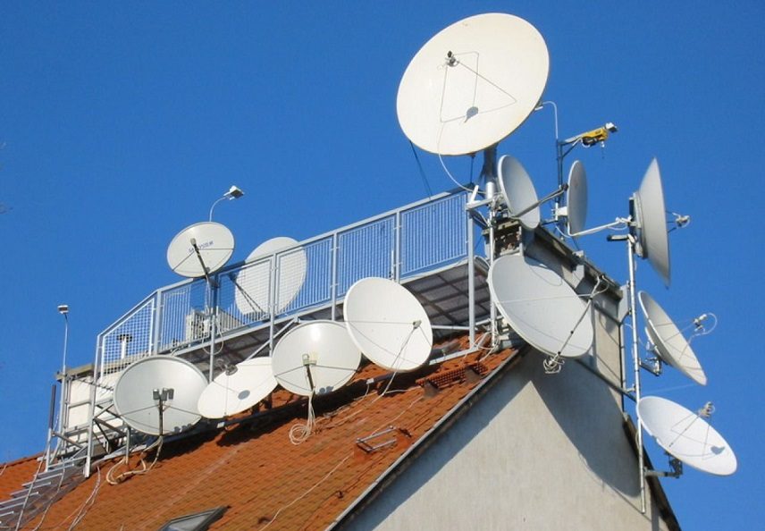

Немного о технологиях спутникового Интернета

Технологии спутникового Интернет .Спутниковый Интернет - это один из экономичных способов высокоскоростного подключения к всемирной Сети. По сравнению с традиционными выделенными линиями стоимость получения одного Мегабайта данных в 2-5 раз ниже. При этом спутниковое соединение обеспечивает столь же быструю передачу данных, как и выделенная линия - до нескольких Мегабит в секунду (это примерно в 100 раз быстрее обычного модема). Спутниковая связь очень надежна, и вопреки расхожему мнению, отлично работает при любой погоде - нужно просто использовать антенну достаточного диаметра.
За счет чего обеспечивается такая экономичность? Информация передается через спутник прямо из Европы, где цена трафика Интернет значительно дешевле, чем в России. Кроме того, поскольку в спутниковой сети работают тысячи пользователей из нескольких стран, провайдер спутникового Интернет имеет гораздо более низкую входную цену, чем относительно небольшой провайдер. Затраты на эксплуатацию спутникового канала также значительно меньше, чем протяженных проводных линий связи. Все это в совокупности позволяет гарантировать Вам минимально возможную цену.
Не смотря на большое количество пользователей, спутниковый канал "перегрузить" очень сложно. Ведь те же самые спутники используются для передачи десятков цифровых телеканалов, а для этого нужна несравнимо большая пропускная способность. В случае необходимости провайдер спутникового Интернет расширяет свою полосу. Обычно в его распоряжении находится полоса в несколько десятков Мегабит/с, и каждому пользователю из нее выделяется до нескольких Мегабит/с. Таким образом, Вам гарантирована комфортная работа в Интернет.
Услугами спутникового Интернет можно пользоваться в любой географической точке, расположенной в обширной зоне обслуживания спутника. Если изменится место Вашего проживания или расположения офиса, Вы всегда сможете перенести свой "спутниковый канал Интернет". Вам не придется снова тратить деньги на высокоскоростное подключение к Интернет.
Спутниковый доступ в Интернет может быть организован двумя способами: симметричным и асимметричным.
Асимметричный доступ ориентирован на небольшие компании и организации, а также на частных пользователей. В его основу положено использование двух каналов связи: один, спутниковый, с большой (от сотен Килобит до нескольких Мегабит) пропускной способностью - предназначен для получения информации из Сети; другой, как правило, наземный (со скоростью десятки килобит в секунду) для организации запросов о предоставлении информации с того или иного интернет-ресурса (обычно такой канал предоставляется местным интернет-провайдером).
Передача данных через спутник носит односторонний характер: Вы можете только получать данные. Для передачи Ваших запросов на какую-либо информацию в Сети, а также исходящих от Вас данных (например, Ваших электронных писем) нужно использовать любой вид наземного соединения, так как исходящая от Вас информация обычно не тарифицируется местными провайдерами (не относится к Dial-Up). Это может быть кабельное соединение (Ethernet, ADSL, ISDN), радио-линия, или, как это часто бывает, обычный Dial-Up модем и даже мобильный телефон (GPRS). Вся входящая к Вам информация будет поступать через высокоскоростной спутниковый канал. Такая схема работы позволяет увеличить скорость Вашего существующего подключения к Интернет и существенно снизить Ваши расходы на трафик.
Дополнительная информация о наземном соединении. К наземному соединению не предъявляется никаких особых требований. Достаточно того, чтобы оно было относительно надежным и его скорость не была меньше 10-20 Кбит/с. Однако чем качественнее будет Ваше наземное соединение, тем быстрее будут передаваться данные со спутника. Ведь от качества запросов зависит качество информации, поступающей к Вам в ответ. Например, с хорошей выделенной линией скорость в спутниковом канале в среднем на 20-50% выше, чем при использовании модема. При этом Вы можете использовать статический или динамический IP-адрес, реальный или "внутренний".
Для приема информации со спутника используется комплект оборудования, состоящий из небольшой параболической антенны и спутникового DVB-модема (в виде встраиваемой в компьютер PCI-карты или внешнего USB-устройства). В офисных сетях могут также использоваться специальные DVB-роутеры. Никаких разрешительных документов на установку приемной антенны не требуется. Стоимость комплекта приёмного оборудования для асимметричного доступа в Интернет варьируется от 200$ до 600$ (в зависимости от диаметра приёмной антенны и функционала DVB-модема). В эту стоимость не включены затраты на организацию наземного исходящего канала связи с провайдером.
Симметричный доступ предназначен для корпоративных пользователей (как правило крупных) и операторов связи. В его основе лежит создание с помощью наземных спутниковых станций VSAT двунаправленного спутникового канала - от абонента к спутнику и наоборот. Данное решение достаточно дорого: комплект оборудования необходимого для организации двухстороннего спутникового интернета, для России, обойдётся в 1000-3000$, разрешительные док-ты 3000-5000$, установка оборудования в 250-1000$.
Спутниковая антенна дает возможность не только быстро скачивать файлы из Сети. Она позволяет также получить доступ к многочисленным телевизионным и радио каналам, различным медиа-службам, которые занимаются трансляцией мультимедийных данных - информационных, бизнес- и развлекательных каналов, просмотр которых возможен с помощью web-броузера. Вы можете подписаться на высокоскоростную off-line рассылку аудио- и видеоинформации, программного обеспечения, графических и текстовых файлов. Все это позволит Вам получить максимальный выигрыш от использования возможностей широкополосного Интернет-доступа и значительно сэкономить на затратах по оплате наземного канала.
Типы DVB-модемов
Аппаратные DVB-модемы - это Hi-End в мире спутниковых тюнеров. Такая карта представляет собой полноценный спутниковый тюнер, умещённый на одной PCI-плате. На них стоит свой RISC-процессоры, своя память, они своими силами выделяют нужные данные из потока, декодируют MPEG-2 формат, при необходимости декодируют закрытые каналы (при наличии кодов) и не используют ресурсов центрального процессора для просмотра телепередач. Они имеют возможность выводить изображение на экран монитора и внешнего ТВ-приемника, например телевизора. На таких платах обычно устанавливается S-Video, или композитный ТВ-выход.
Если вы хотите поставить спутниковую ТВ-карту на сервер для небольшой рабочей группы, то возможно вам телепередачи смотреть вовсе не придётся. Для таких случаев были разработаны специальные карты и даже внешние блоки с роутерами. Типичные их примеры - Pent@net, Penta@Office. Выпускаются очень распространённые дешёвые спутниковые карты Pent@value, предназначенные для работы в интернете. Это полностью софтварные платы, у которых обработкой цифрового потока занимаются исключительно драйвера. Эта плата предназначена исключительно для работы с данными, а потому в драйверах отсутствует возможность просмотра спутникового ТВ. Зато с её настройкой проблем практически не возникает, и многие провайдеры поддерживают эту плату, и если уж пишут своё программное обеспечение, то делают это и в расчёте на Pent@value. Ещё одним распространённым прозводителем спутниковых DVB-модемов является компания Technisat выпускает три карты:SkyStar-1, SkyStar-2 и SkyStar-3.
SkyStar-1 - большая дорогая плата с аппаратным фильтром и декодером MPEG-2. Имеет все преимущества аппаратных карт.
SkyStar-2 - полупрограмное дешёвое решение. Она не имеет MPEG-2 декодера, поэтому при воспроизведении видео будут затребованы ресурсы центрального процессора. SkyStar-2 может просматривать только открытые телевизионные каналы, эта плата не имеет ни ТВ-выхода, ни аудио-выхода.
SkyStar-3 - практический аналог SkyStar-2 с программным обеспечением, позволяющим записывать видео на винчестер в реальном времени. Для интернета подойдёт также хорошо, как и SkyStar-2.
Но учтите, что и в том, и в другом случае смотреть спутниковое ТВ и одновременно работать с таким же интернетом не получится. Придётся выбирать.